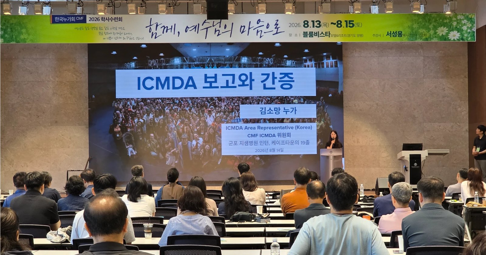
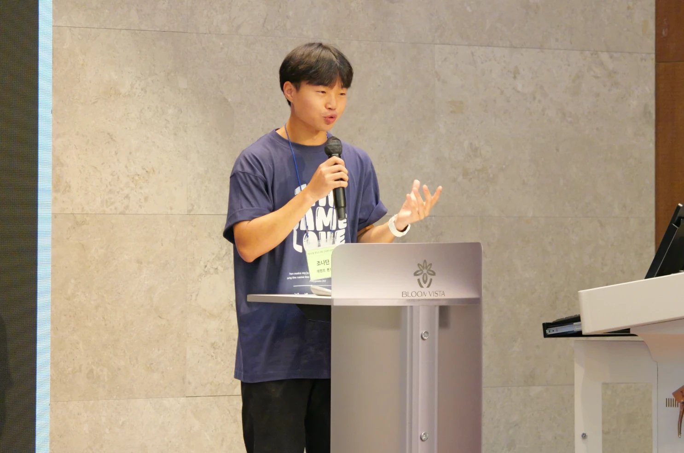
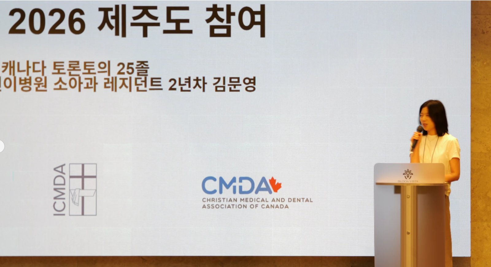

46회 CMF 학사수련회 ICMDA 보고와 간증(금 10:20) · 발표 김소망 누가(진행) · 조나단(계명의대 본1) · 김문영(토론토 SickKids 소아과 R2) · 신전수 교수(연세의대 미생물학) · 2026 ICMDA 세계대회(제주) 결산 세션



SECTION 01
개요
copy
2026년 6월 30일~7월 5일 제주에서 열린 ICMDA 세계대회(주제 "Building God's Kingdom Amongst the Broken")를 결산하는 보고 세션. 한국누가회와 한국기독의사회가 공동 주최했고, 138개국 1,200명 이상이 참가했으며 한국인 참가자는 약 173명이었다. CMF는 약 3천만 원을 모금해 학생·졸업생 65명의 참가를 지원했고, 짐바브웨·캄보디아·베트남·마다가스카르·몽골 등 열방 의료인의 참가도 후원했다. 진행은 김소망 누가(남아공 케이프타운 의대 졸, 지샘병원 인턴) — 올해부터 ICMDA Area Representative를 맡았다.
빨리 리타이어해야 되겠다. 빨리 넘겨주고.
네 발표를 관통하는 낱말은 하나 됨이고, 세션의 마지막 문장은 뜻밖에도 세대 전수다 — 원로 세대 발표자가 대회를 다 치러낸 젊은 세대를 보고 내린 결론: "빨리 리타이어해야 되겠다. 빨리 넘겨주고."
SECTION 02
발표 구성
copy
| 발표 | 발표자 | 요지 |
|---|---|---|
| 대회 개요 | 김소망 누가 | 138개국 1,200+명 · 한국인 173명 · CMF 모금 3천만 원으로 65명 지원 · 열방 의료인 후원 |
| 학생 간증 | 조나단 (계명의대 본1) | "하나 됨" — 하룻밤에 만든 태권도 무대 · 캄보디아 CMF와의 교류 |
| 디아스포라 간증 | 김문영 (토론토의대 졸, SickKids 소아과 R2) | 이방인의 정체성이 하나님 안에서 온전해진 일주일 |
| ICMDA 해설 | 신전수 교수 (연세의대) | East Asia 지역의 역사 · ICMDA의 두 특징 · 세대 전수 소감 |
★ KEY INSIGHT
발표별 내용
copy
★ KEY INSIGHT
조나단 — 하나 됨의 두 장면
copy
① 하룻밤의 태권도. International Night(각 나라가 자기 문화를 무대로 올리는 시간)의 한국 무대는 원래 오카리나였는데, 행사 전날 밤 태권도로 바뀌었다. 도복도 송판도 없는 상태에서 참가자 단톡방에 "유단자 연락 주세요" 메시지를 올리자 밤 10시에 열 명가량이 답했고, 흩어진 숙소에서 밤 11~12시에 택시로 모여 새벽까지 연습했으며, 소품팀은 제주도 전체의 태권도장에 전화를 돌려 도복과 송판을 구했다. "우리 한국누가회가 그 정도로 하나 된 마음으로 해낼 수 있는 공동체라는 자부심을 느꼈습니다."
② 캄보디아 CMF와의 교류. 대경 CMF는 10여 년 전부터 김경중 선교사를 매개로 캄보디아와 교류해 왔고(조나단 본인도 매주 주일 온라인 성경 읽기 모임 참여), 이번 대회에서 캄보디아 CMF가 ICMDA에 정식 가입했다. 대회 후 캄보디아 지체들이 대구를 방문해 대경 누가의 집 바비큐, 계명대 동산병원 견학까지 함께했고, 공항 배웅에서 "캄보디아에서 꼭 보자"는 말이 아무 생각 없이 입에서 나왔다. 밤새 3시간 동안 각국 학생들과 369 게임을 한 기억, "온전한 사랑이 두려움을 내쫓는다"는 말씀 — 언어 장벽의 걱정이 무색했던 하나 됨의 경험으로 남았다.
SECTION 05
김문영 — 이방인의 정체성이 온전해진 일주일
copy
목회자 자녀로 어릴 때 캐나다로 이민, 워털루에서 아버지와 함께 미얀마·소말리아 난민 아이들에게 음악과 공부를 가르치는 사역을 하며 소아과의 꿈을 키웠고, 토론토 의대에서 캐나다 CMDA 활동, 친오빠와 캐나다 의과대학 한인학생회(KMSA)를 창립했다. 현재 토론토 SickKids 소아과 레지던트 2년차 — 그러나 지난 1년이 "평생 제일 힘들었던 시간"이었다. 하나님을 위해 택한 길에서 오히려 하나님과 멀어지는 느낌, 그리고 "한국인도 아니고 캐나다인도 아닌 이방인 같은 마음."
제주행은 그 상태에서의 모험이었다 — 참가비 부담, 기독교 모임을 위해 휴가를 내고 지구 반대편으로 간다는 부담. 기도 후 확인해 보니 2년차 첫 휴가가 대회 날짜와 정확히 겹쳐 있었다("하나님이 가라고 하시는 것 같다"). 5월 한국 방문 중 두려운 마음으로 문의한 KCMF 말씀사경회에서 먼저 환대와 회복을 경험했고, 대회에서 세 가지를 배웠다:
- 천국을 맛보았다 — 모든 나라와 언어가 한자리에서 같은 하나님을 찬양하는 장면. "이렇게 아름다웠으면 천국은 얼마나 더 아름다울까."
- 겸손과 감사 — 쓰레기 마을에서 자란 아이들, 자원이 없어 살릴 수 있는 아이를 떠나보내는 의사들, 아버지를 여의고 여동생들을 학교에 보내려 일하며 의대를 다니면서도 "God has been so good"이라 간증하는 아프리카 친구 앞에서 "제 자신이 창피해지고 회개하게 되더라고요."
- 태어나기 전부터의 사랑 — 어머니가 자신을 임신한 채(36주까지) 필리핀에서 석 달간 선교하던 사진. "내가 나를 사랑하지 못했을 때, 하나님은 태어나기 전부터 나를 사랑하고 계셨다." 한국인이면서 캐나다인인 복잡한 정체성이 하나님 안에서 온전해지는 경험.
돌아가서는 North American Committee를 새로 시작하며, 해외 곳곳의 한인 지체들 — 특히 MK·PK들 — 을 기억하고 기도해 달라는 부탁으로 닫았다. 차기 대회는 2030년 인도네시아다.
SECTION 06
신전수 — ICMDA란 무엇인가, 그리고 세대의 소감
copy
1980년 입학 후 줄곧 CMF에서 활동하다 2008년 한국기독의사회로 "수출"되어 총무부터 맡았고, 그 인연으로 ICMDA 활동의 산 역사를 알고 있는 발표자. 핵심 정보:
- 조직 — ICMDA는 전 세계를 14개 지역(region)으로 나눠 운영하며, 그 아래 Area/Regional Representative가 단위 대표성을 가진다. 올해부터 AR은 김소망, RR(학생·젊은 의사 독려)은 최원규 목사가 맡는다.
- East Asia의 역사 — 원래 한·일·대만의 3국 모임(트라이네이션)이었고, 그 시작이 바로 이 양평에서 열린 기독의사회 모임이었다. 2013년 ICMDA 동아시아 지역으로 개편해 13년째 — 매달 줌 미팅, 매년 8월 첫 주 컨퍼런스.
- ICMDA의 두 특징 — ① 강사 대부분이 누가(의료인)다: 성경 강해보다 전문성 있는 의료인이 자신의 프로페셔널 라이프와 윤리를 말한다. ② 10개의 트레이닝 트랙(생명윤리, Saline Process 등)이 전부 직업 생활을 다룬다 — 성경 본문 공부는 이미 하고 있다는 전제 위에서. "어떻게 살아야 하고 어떻게 영향력을 미쳐야 할지를 깨우쳐 주는 프로그램이 우리에게도 참 필요합니다."
- 유럽 참가자들의 평 — "이렇게 시간을 철저하게 지키는 대회는 유럽에서도 본 적이 없다."
이번 ICMDA는 우리 젊은 누가와 학생을 위해서, 그리고 그들에 의해서 된 것 같다.
그리고 이 세션에서 가장 무게 있는 문장. 대회를 준비한 이들이 끝나고 나서 공통으로 느낀 것 — "이번 ICMDA는 우리 젊은 누가와 학생을 위해서, 그리고 그들에 의해서 된 것 같다." 어른들은 "젊은 학생들이 무슨 경험이 있다고" 걱정하지만 실제로는 너무나 잘 해냈고, 학생들의 국제화는 이미 준비되어 있었다.
그러면서 저와 비슷한 또래는 빨리 리타이어해야 되겠다, 빨리 넘겨주고 — 이런 생각을 했어요.
SECTION 07
종합
copy
보고 세션이지만 수련회의 다른 세션들과 정확히 맞물린다. 첫째, 하나 됨의 실증 — 전체특강(2)의 핵심가치 3번 질문("직능이 다른 누가와 마지막으로 진지하게 이야기한 것이 언제인가")에 대해, 이 세션은 직능을 넘어 138개 국적을 넘은 하나 됨의 실제 사례를 보여 준다. 둘째, 세대 전수의 자발적 증언 — 신전수 교수의 "빨리 넘겨주고"는 다음날 아침 전체특강(2)의 핵심 명제("사람을 세운다는 것은 자리를 내주는 것이다", 전체특강2 우리는왜아직여기있는가)를 강요당하지 않은 원로의 입으로 하루 먼저 말한 셈이다 — 젊은 세대가 실제로 해내는 것을 본 뒤에 나온 결론이라는 점에서, 특강의 논리(전수는 재생산까지)의 현장 증거가 된다. 셋째, 김문영의 간증은 94회 소감문들이 보여 준 수용의 축 — 공동체가 지친 한 사람에게 실제로 무엇을 하는가 — 의 학사·디아스포라판이다.
함께 더 생각할 지점
- 디아스포라 한인 의료인이라는 미개척 회원층. 김문영의 서사(누가회를 알았지만 "외국인이 접하기 어려웠다" → 말씀사경회의 환대로 진입)는 KCMF의 해외 한인 의료인 연결이 환대의 문턱 문제임을 보여 준다. MK·PK 기도 부탁과 North American Committee 신설은 후속 연결의 실마리.
- 65명 지원의 후속. 3천만 원 모금으로 참가한 65명이 대회 이후 어디에 연결되는가 — 조나단(캄보디아 교류 지속)과 김문영(위원회 신설)은 좋은 사례이나, 나머지 참가자의 후속 배치는 확인할 지점이다.
교차 참조
- 46회 CMF학사수련회 — 수련회 허브.
- 전체특강2 우리는왜아직여기있는가 — "자리를 내주는 것"의 명제를 이 세션의 원로 증언이 하루 먼저 실증.
- 의료와세상포럼 — 94회 학생수련회의 ICMDA Report Back(참여 학생 4명). 학생판과 학사판의 짝.
- ICMDA · 한국누가회 — 대회 공동 주최 구조와 East Asia 지역사.
원본
📖 원본: 수련회 생중계 전사. 세션 후 고형원 선교사의 찬양 간증으로 이어졌다.